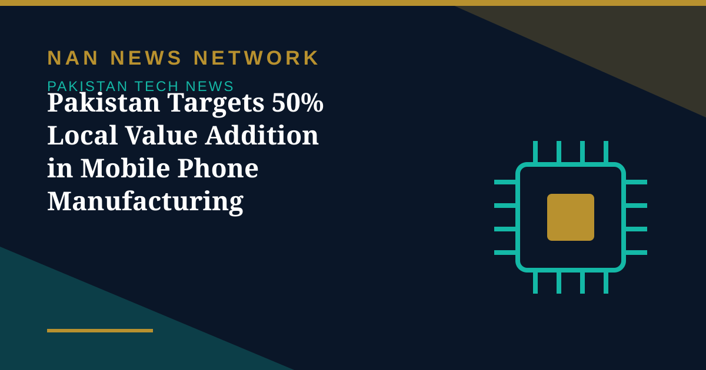

Pakistan Targets 50% Local Value Addition in Mobile Phone Manufacturing

Pakistan is aggressively pushing to transform its local mobile phone manufacturing sector, with the government formulating a new Mobile Device Manufacturing Policy to shift the industry from import-dependent assembly towards robust local component manufacturing. The Ministry of Industries and Production aims to achieve up to 50% domestic value addition over time, according to reports published on October 30, 2026.
From assembly to components
The upcoming policy builds upon the previous Mobile Device Manufacturing Policy 2020–2023. Its focus is heavily on local component production, technology transfer and the development of a supporting industrial ecosystem. Currently, domestic value addition in mobile device manufacturing hovers around just 10% to 20%, leaving considerable room for growth if local suppliers can scale up.
The scale of local production
Between January and September 2026, Pakistan produced 20.08 million handsets locally, against commercial imports of only 2.85 million units in the same period. The locally assembled devices included roughly eight million smartphones and 12 million 2G phones. Data from the Pakistan Telecommunication Authority shows smartphones now account for 71% of all active mobile devices on local networks. VGO TEL emerged as the largest producer in the nine-month period, with 2.50 million handsets.
Imports are already falling
During the first quarter of fiscal year 2026-27, the mobile phone import bill fell 16.6% in dollar terms to $417.24 million, from approximately $500.01 million in the same period last year. Imports rose 7.1% month-on-month in September 2026 but remained 28.2% lower year-on-year compared with September 2025, suggesting the local industry is steadily displacing imports.
If the new policy delivers on component localisation, Pakistan's phone industry could move from assembling imported kits to building a deeper domestic supply chain — and keep more of each phone's value at home.
Sources: TechJuice, October 30, 2026.
More on Pakistan Tech News
- Pakistan Launches New E-Passport With Chip, NFC and Biometric Security
- PTA Fines Mobile and Internet Firms Over Rs3.41 Billion Over Consumer Complaints
- PTA Warns of Rising 5G Security Risks as Cyber Alerts Top 10,000
- Pakistan Internet May Slow Until November 2 as AAE-1 Cable Undergoes Repairs
- PM Sets November Deadline for Alibaba-Backed AI and Digitalisation Projects
- Pakistan's 5G Now Reaches 24 Cities After $509 Million Spectrum Auction
- Pakistan Announces Urdu AI Model 'Buraq' to Keep National Data at Home
- PM Launches Two-Year Drive to Give 500,000 Chromebooks to Talented Students
- Pakistan to Host UN Space Technology Conference on Early Warnings and Climate Action
- PAK-US Tech Connect 2026 Takes 16 Pakistani Tech Firms Across America
- Pakistan Wins 11 Awards at the ASOCIO Digital and AI Awards 2026
- Pakistan Showcases AI Innovations at Abu Dhabi's AI Everything Global 2026